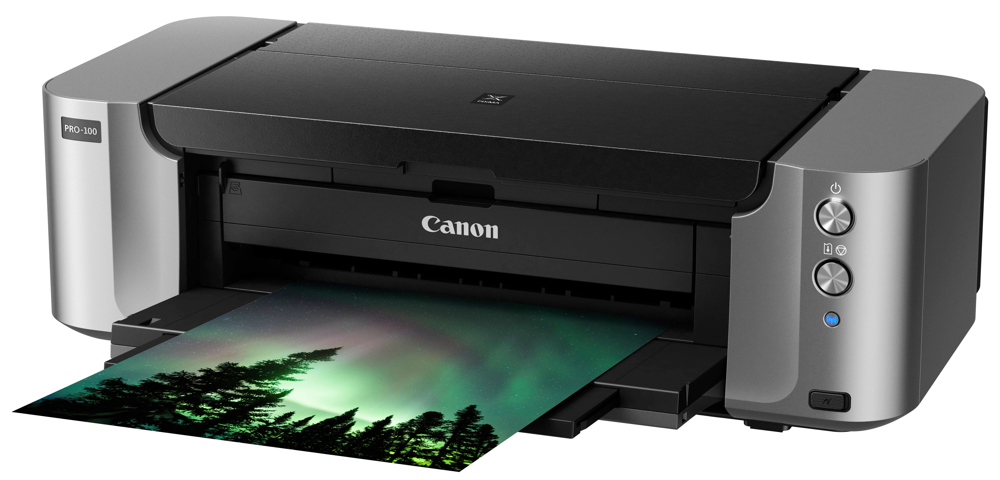

Ezen az oldalon a nyomtatókról lesz szó az informáciokat a wikipédiáról szereztem
nyomtatókról információ: Nyomtatók olyan eszközök, amelyek digitális adatokat alakítanak át nyomtatott formátumba. Ezek az eszközök lehetnek személyes vagy hálózati használatra tervezettek, és széles körben elterjedtek az otthonokban, irodákban, valamint az ipari és kereskedelmi környezetekben is. Itt van néhány fontos dolog, amit érdemes tudni a nyomtatókról: 1. Típusok: A legelterjedtebb nyomtatótípusok közé tartoznak a tintasugaras, lézer, hő- és pontmátrix nyomtatók. Mindegyik típusnak megvannak a saját előnyei és alkalmazási területei. 2. Működési elv: A nyomtatók működése eltérő lehet a típustól függően. Például a tintasugaras nyomtatók festékpatronokból nyomtatnak, míg a lézernyomtatók lézerfény segítségével rögzítik a tonert a papírra. 3. Funkciók: A modern nyomtatók gyakran többfunkciós eszközök, amelyek képesek nyomtatásra, szkennelésre, másolásra és néha faxolásra is. Néhány nyomtató beépített Wi-Fi vagy Ethernet kapcsolattal rendelkezik a vezeték nélküli nyomtatáshoz. 4. Felhasználás: A nyomtatók széles körben használhatók otthoni és irodai környezetben, valamint különböző iparágakban is, például a grafikai tervezésben, az egészségügyben és az oktatásban. 5. Költségek: A nyomtatók árai változóak lehetnek a típustól és a funkcióktól függően. Fontos szempont az is, hogy mennyibe kerülnek a fogyóeszközök, mint például a tintapatronok vagy a tonerek. 6. Környezeti hatások: A nyomtatók használatának környezeti hatásait is fontos figyelembe venni, például az energiafogyasztást és a fogyóeszközök újrahasznosíthatóságát. Összességében a nyomtatók fontos eszközök a digitális információk átalakításában nyomtatott formátumba, és számos különböző típus és funkció közül választhatunk az igényeinknek megfelelően.
(A forrás a képen található)készitette: Körtvélyesi Ármin